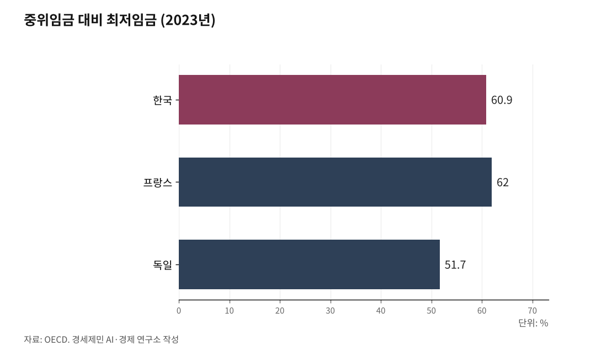

[경세제민] 최저임금③ 독일 벌금 7억원, 한국은 2000만원
중위임금 대비 한국 61%, 프랑스 62%로 비슷한데 왜 한국만 전쟁터인가
산업별 교섭 없고 처벌 약해... 구조가 문제다
독일 FKS 연간 12만건 단속, 한국 근로감독관 1인당 2912개 사업장
※사진: 독일 연방노동법원 전경. 독일은 노동법원과 강력한 근로감독으로 최저임금을 지킨다.
AI경세제민=김갑봉 기자 | 최저임금 수준 비교
OECD(경제협력개발기구)가 사용하는 카이츠 지수로 보면 한국이 특별히 낮지 않다. 카이츠 지수는 중위임금 대비 최저임금 비율을 나타내는 지표다. 쉽게 말해 중간 소득자가 100만원 받을 때 최저임금 노동자가 얼마나 받는지 보여준다. 2023년 기준 한국 60.9%, 프랑스 62%, 독일 51.7%, OECD 평균 55-57% 수준이다.
절대 금액도 살펴보자. 독일은 2025년 1월 1일부터 시급 12.82유로(약 1만8700원), 프랑스는 2024년 11월 1일부터 11.88유로(약 1만7300원), 영국은 2025년 4월 1일부터 12.21파운드(약 1만9800원)를 적용한다.
한국은 시급 1만30원이다. 절대 금액은 선진국이 70-90% 높다. 하지만 1인당 GDP와 물가 수준을 고려하면 격차는 줄어든다. 문제는 수준이 아니라 지키느냐 안 지키느냐다.
독일의 강력한 시스템
독일은 2015년 1월 1일 전국 단일 최저임금제를 도입했다. 도입 전 우려와 달리 실업률은 오히려 낮아졌다. 유로스타트(Eurostat) 자료를 보면 2014년 5.0%에서 2019년 3.2%로 떨어졌다.
비결은 강력한 처벌이다. 독일 최저임금법(MiLoG, Mindestlohngesetz) 제21조는 위반 시 최대 50만유로(약 7억원) 과태료를 부과한다. 한국 최대 2000만원의 35배다. 고의적 위반은 형사처벌도 가능하다.
근로감독도 철저하다. 독일 관세청 산하 FKS(Finanzkontrolle Schwarzarbeit, 불법노동통제국)가 불법노동과 최저임금 위반을 단속한다. FKS는 2023년 한 해만 12만1000건을 점검했다. 16개 주정부도 독자적으로 감독한다.
모든 기업은 근로시간을 기록하고 2년간 보관해야 한다. 위반하면 그것만으로도 과태료다. 한국도 모든 사업장이 근로계약서를 서면으로 교부해야 하지만, 현실은 지켜지지 않는다.
산업별 교섭의 차이
독일과 프랑스의 진짜 비밀은 산업별 단체교섭이다. 프랑스는 협약확장 제도로 단체협약 적용률이 98%에 달한다. 독일은 약 50% 수준, 한국은 10%대다.
산업별 교섭은 개별 기업의 부담을 줄인다. 같은 업종 기업들이 동일한 임금을 지급하니 출혈경쟁이 없다. 자영업자도 혼자 싸우지 않는다. 업종 단체가 노조와 협상한다.
독일 금속노조와 사용자단체가 맺은 협약은 370만명에게 적용된다. 개별 기업이 370만명과 따로 협상할 필요가 없다. 한국은 기업마다 매년 교섭하니 갈등이 반복된다.
※사진: 프랑스 노동절 집회 현장. 프랑스는 협약확장 제도로 단체협약 적용률이 98%에 달한다.
일본 지역별 차등의 현실
일본은 47개 도도부현별로 최저임금이 다르다. 후생노동성 자료를 보면 2025년 도쿄는 시간당 1226엔, 오키나와는 1023엔이다. 203엔 차이로 도쿄가 20% 높다.
지역 격차가 고착화된다는 비판이 있다. 젊은이는 도쿄로 몰리고 지방은 공동화된다. 일본도 문제를 인식해 2023년 최저임금 등급을 4개에서 3개로 줄였다.
한국에서 지역별 차등 도입 여부는 입법재량 영역으로 보는 견해가 유력하다. 헌법 제32조 3항은 "근로조건의 기준은 인간의 존엄성을 보장하도록 법률로 정한다"고 규정할 뿐, 지역 차등 자체를 금지하지는 않는다. 다만 지역 격차 고착화 등 부작용에 대한 검토가 필요하다.
미국의 이중 구조
미국은 복잡하다. 연방 최저임금은 시간당 7.25달러로 2009년 이후 15년째 동결이다. 하지만 30개 주가 자체적으로 더 높은 최저임금을 정했다. 워싱턴주는 2025년 16.66달러, 캘리포니아는 16.50달러다.
도시는 더 높다. 시애틀은 2025년 1월 1일부터 시간당 20.76달러, 샌프란시스코는 2025년 7월 1일부터 19.18달러를 적용한다. 연방 최저임금의 2.5-2.8배다.
미국 노동통계국(BLS, Bureau of Labor Statistics) 2023년 자료를 보면 연방 최저임금 이하로 받는 비중은 1.0%다. 이 수치는 연방 기준만 반영한 것이라 주와 시 최저임금 위반은 포함되지 않았지만, 한국보다 훨씬 낮다.
※사진: 미국 캘리포니아 패스트푸드점. 2024년 4월부터 시간당 20달러 최저임금이 적용됐다.
처벌과 감독의 격차
독일과 한국의 가장 큰 차이는 처벌 수준이다. 독일 최저임금법 위반 시 최대 과태료 50만유로(약 7억원), 한국 최대 2000만원으로 약 35배 격차가 있다.
근로감독 인력도 차이가 크다. 한국 고용노동부 근로감독관은 2141명이 전국 624만개 사업장을 담당한다. 1명당 2912개다. 독일 FKS는 대규모 전담조직으로 2023년 한 해 12만1000건을 점검했다. 16개 주정부가 별도 감독권을 갖고 있다.
최저임금 미만율도 차이가 있다. 독일은 공식 통계가 드물지만 대체로 낮은 수준으로 알려졌다. 한국은 민간 추정에 따르면 주휴수당 포함 시 21.1%에 달한다는 분석도 있다. 다만 국가별 미만율은 정의와 조사법이 달라 직접 비교는 어렵다.
근로시간 기록 의무도 차이가 있다. 독일은 모든 기업이 근로시간을 기록하고 2년간 보관해야 한다. 위반만으로도 과태료다. 한국은 근로기준법상 모든 사업장이 근로계약서를 서면으로 교부해야 하지만 5인 미만 사업장은 감독이 거의 이뤄지지 않는다.
한국의 최저임금 갈등은 수준의 문제가 아니라 구조의 문제다. 카이츠 지수로 보면 한국 61%로 프랑스 62%와 비슷한데도 갈등이 심한 이유는 개별 기업과 노동자가 싸우는 구조, 처벌이 약한 구조, 감독이 부실한 구조 때문이다. 다음 편에서는 AI시대 플랫폼 노동과 노동법원의 필요성을 다룬다.

참고문헌
OECD, 「Employment Outlook 2025 - Country Notes」, 2025.
독일 연방정부, 「Mindestlohn 2025」, Zoll.de, 2025.
독일 최저임금법(Mindestlohngesetz, MiLoG), 2015.
프랑스 경제재정부, 「SMIC 2024」, 2024.11.
일본 후생노동성, 「지역별 최저임금의 답신」, 2025.
미국 노동통계국(BLS), 「Characteristics of Minimum Wage Workers」, 2023.
시애틀시, 「Minimum Wage Ordinance」, 2025.
한국노동연구원, 「단체협약 적용률 국제비교」, 2023.
※ 이 기사는 AI 프로그램 클로드4.1을 활용해 작성했습니다.
사진 출처
· [대표사진] Lukania31, "Deutscher Bundestag 2025.jpg", 위키미디어 공용, CC0, https://commons.wikimedia.org/wiki/File:Deutscher_Bundestag_2025.jpg
※ 이 브리핑은 인공지능을 활용해 작성했습니다.
관련기사
- [경세제민] 자영업자① 자영업자는 사장인가 노동자인가
- [주식공부] 코스피 12.13% 하락, 자사주 끊긴 자리에 선 개인
- 노후계획도시 선도지구, 분담금은 용적률 두 구간에서 갈린다
- [철도] KTX-1 46편성 수명 2033년, 발주 시한은 2027년
저작권자 © AI경세제민 무단전재 및 재배포, AI학습 및 활용 금지